vLLM architecture
and API serving
From a local model to an observable OpenAI-compatible service contract.

The client sees an HTTP contract. Behind it, tokenization, scheduling, model workers and GPU kernels form the service.
The demo works. The SDK request fails.
Illustrative incidentOperator sees
Server prints “ready”; a local completion command returns text. GPU memory is allocated and kernels run.
Client sees
Chat request rejects the model name. The next request streams as one buffered lump. Neither symptom is diagnosed by GPU utilization.
Four boundaries, four kinds of evidence
Request lifecycle| Boundary | Question | Probe |
|---|---|---|
| client → HTTP | route, timeout, auth? | status + request ID |
| HTTP → template | valid chat messages? | rendered tokens |
| template → engine | admitted and queued? | limits + queue |
| worker → GPU | model/kernel healthy? | logs + device trace |
By the end, you can prove a service works
Observable outcomes/v1/models and chat.[DONE].From process startup to client evidence
Seven turnsA server is ready when the client contract has been probed—not when the process has merely started.
Architecture today; scheduling internals next
ScopeWe name the scheduler and KV allocator so requests can be traced. Topic 05 derives PagedAttention and continuous batching; Topic 06 measures the saturation knee under many clients.
What would you ask the server first?
Pause · 60 secondsWould you restart the GPU worker, list advertised models, change the prompt, or profile a kernel? Choose the least costly discriminating probe.
Engine boundary
Separate the API process from model execution.
vllm serve starts an HTTP frontend
CLI boundaryThe frontend exposes supported routes such as /v1/models and chat completions. Route availability and parameters depend on the installed vLLM version and model class.
One request crosses four responsibility zones
High-level architecture| Zone | Owns | Failure symptom |
|---|---|---|
| API frontend | HTTP, validation, streaming | 4xx / broken SSE |
| tokenizer/template | messages → token IDs | wrong prompt or no chat |
| engine/scheduler | admission, live request state | queue/limit |
| worker | weights, KV, GPU kernels | OOM/compute error |
Startup has phases before readiness
LifecyclePin an immutable model snapshot first. The process can be alive while the model is unavailable. A readiness probe should test the route and model contract, not only a listening TCP port.
A clean restart preserves immutable assets
Bounded operator procedure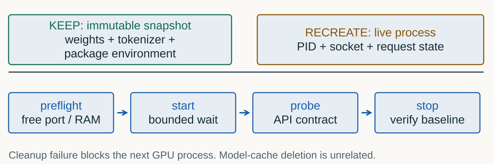
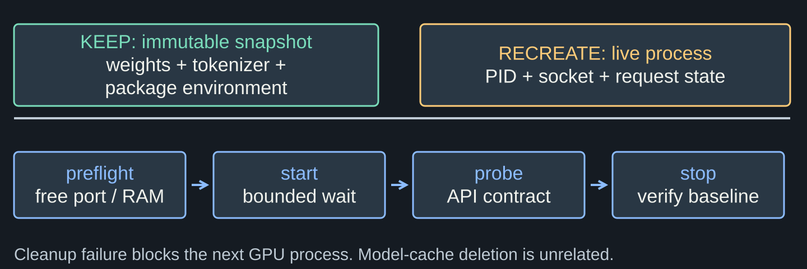
Readiness accumulates evidence at different layers
Probe design · no capacity claim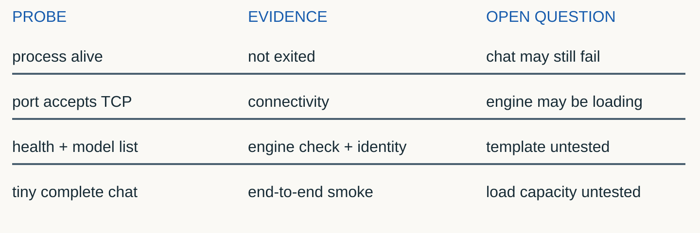
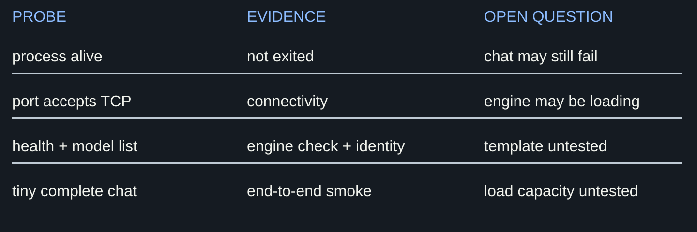
Model config constrains the service
Identity and limitsThe checkpoint config selects the model family and dimensions; tokenizer and chat template determine prompt tokens. A CLI override may cap context below the model's advertised maximum.
Control plane and token data are not the same
Trace disciplineControl
Load revision, set served name and limits, accept/cancel a request, report readiness and errors.
Data
Render message text, tokenize, run prefill/decode, emit token deltas and account for usage.
Reveal the observable boundary at each hop
Interactive request path · step with →Record base URL, model name, timeout and one sanitized payload shape.
Status, request ID, validation error and streaming headers reveal this boundary.
Rendered message tokens—not characters—determine context admission.
Admission and queue state decide when the GPU sees work.
Weights, KV state and kernels produce logits; failures include OOM and unsupported paths.
Do not debug every failure on the GPU
Fast triageA rejected model string is frontend configuration. Wrong token count may be template/tokenizer. OOM is worker capacity. Delayed first byte through a proxy can be transport buffering.
Which probe localizes this failure?
Pause · three cluesWhere would you inspect next: network, chat template/rendered tokens, scheduler or CUDA kernels? Explain what a successful /v1/models request has already ruled out.
Model identity
The URL, served name and checkpoint revision are different identifiers.
One deployment has several different identities
Recorded deployment · vLLM 0.29.0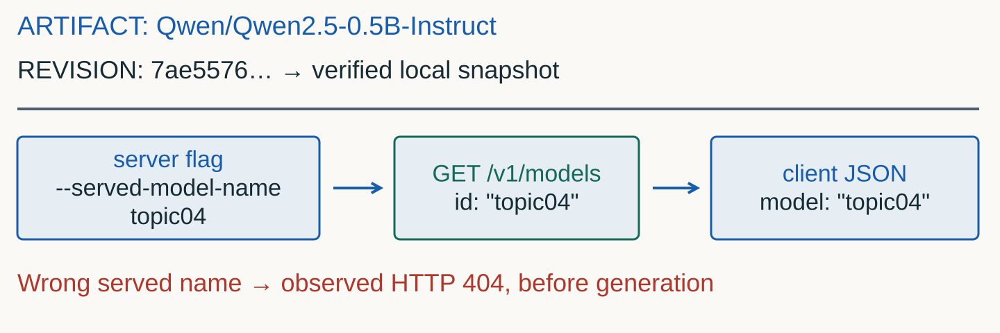
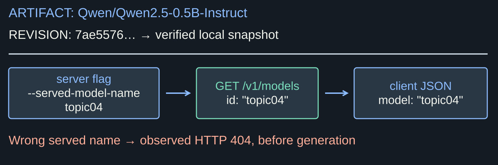
A model ID alone is not reproducible
Artifact provenanceKeep tokenizer, model config and weights from one snapshot. Record the revision and the local cache path. A changed upstream branch can alter outputs without changing your command text.
The client sends the advertised served name
Frontend contractSet it explicitly for the lab, list /v1/models, then copy that exact ID into the SDK's model= field. Do not assume the Hugging Face repository ID is automatically the exposed name.
HTTP envelope and API route
Literal local request boundary| Field | Exact value | Role |
|---|---|---|
| method | POST | generation request |
| URL | http://127.0.0.1:8000/v1/chat/completions | host + route |
| Content-Type | application/json | request encoding |
| body model | topic04 | advertised identity |
Failure: valid server, invalid client model
Production scenario ADetect
GET /v1/models returns topic04; SDK sends Qwen/Qwen2.5-0.5B-Instruct. The frontend rejects the request; GPU traces remain empty.
Mitigate
Use the advertised name or change the server flag, then repeat /v1/models and a deterministic chat smoke request. Pin this in client configuration.
JSON roles become a model-specific token sequence
Chat-template mechanism · schematic boundaries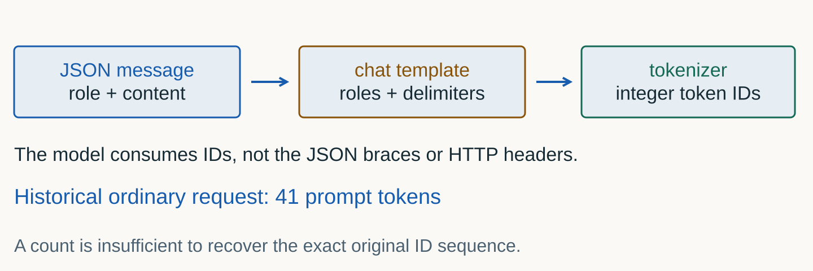
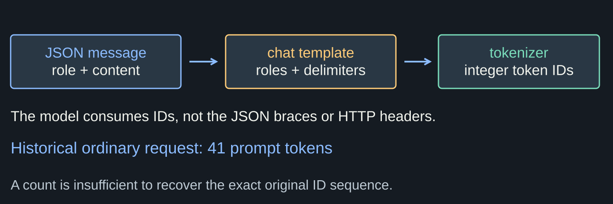
Four visible pieces become 33 input tokens
Fresh v3 capture · local pinned tokenizer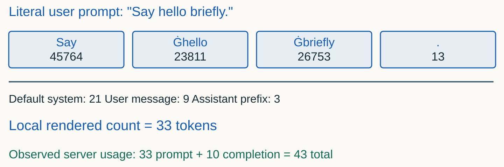
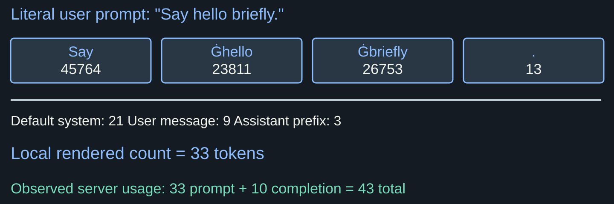
Completions and chat are distinct routes
API subset| Route | Input | Model requirement |
|---|---|---|
/v1/completions | prompt text or IDs | text generation |
/v1/chat/completions | role messages | compatible chat template |
/v1/models | none | advertised name |
Rendered-token accounting
Count after the chat templatePin the tokenizer with the weights
ReproducibilityThe same message JSON can produce different token IDs if the tokenizer or template changes. Capture revision and rendered token count alongside every performance or quality comparison.
Failure: completions work, chat does not
Production scenario BDetect
Raw prompt completion succeeds. Chat returns a template error or malformed role rendering. Compare tokenizer config and the chat request route.
Mitigate
Use a model with a documented chat template or pin a reviewed template via the supported flag, then run role-specific and safety-sensitive smoke tests.
“OpenAI-compatible” does not mean identical
Scope warning“Our SDK accepts the base URL; every feature will behave like the cloud API.”
Where does this request fail?
Pause · boundary test/v1/models lists topic04; SDK sends model="submission"Predict the failure layer and the shortest fix. What extra test would prove that the chat template is also valid?
Request contract
Validate names, roles, token budgets and failure states.
The exact ordinary chat request
Historical source request · output recorded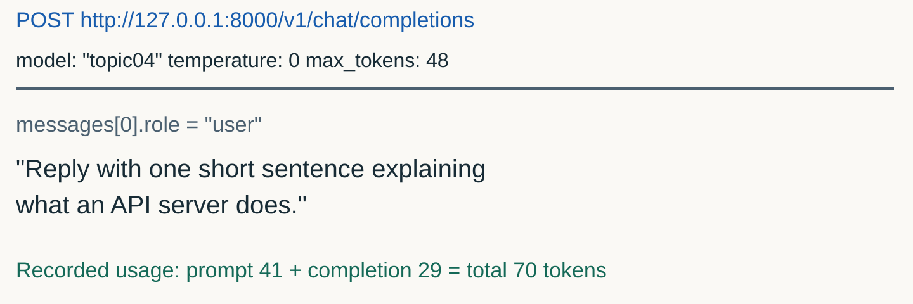
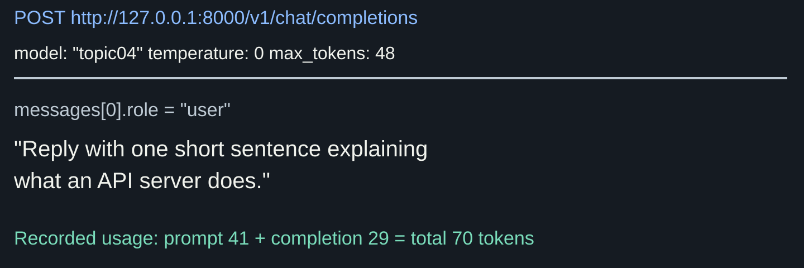
Roles change rendering, not only presentation
Chat semanticsMessage order and roles become model-specific tokens. A client that flattens everything into one user string has changed the model input and may change safety, quality and token count.
Generation settings change the contract
Explicit request values and limits| Setting | Case value | Consequence |
|---|---|---|
| temperature | 0 | greedy-style selection, not cross-runtime identity |
| max_tokens | 48 ordinary; 16 raw | output cap, not promised length |
| stream | false or true | JSON response or SSE events |
| retry count | 0 in smoke | one recorded attempt per call |
Context overflow before generation
Measured negative requestTwo limits meet at admission
Context and runtimeModel/context
The checkpoint defines a supported position range; a server --max-model-len may cap it lower for the deployment.
Request/output
The rendered prompt plus requested generation budget must fit the effective limit, subject to server-specific policy and special tokens.
Sampling parameters are part of reproducibility
Deterministic smokeThey change the generated sequence and may change duration. For a smoke test, use a small explicit cap and stable decoding; for benchmark comparisons, preserve every generation parameter.
A response contains text and a completion contract
Recorded ordinary response · selected fields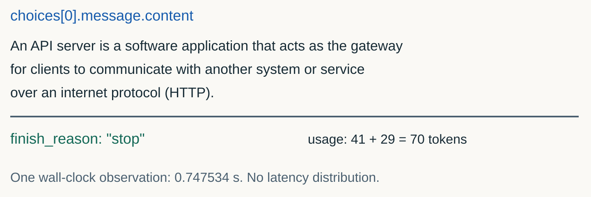
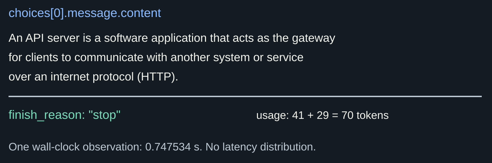
Usage may arrive after the finish event
Synthetic accounting · explicit opt-in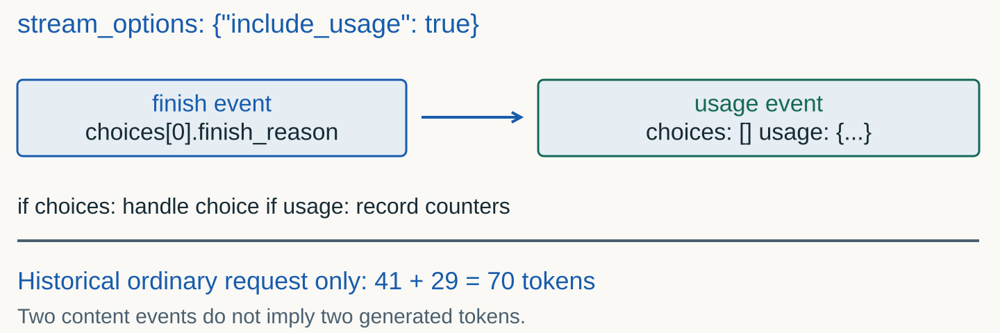
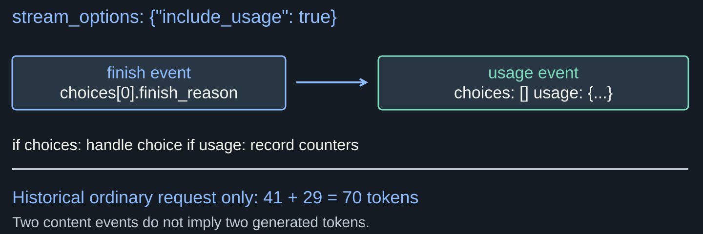
Status codes narrow the next probe
Observed negatives + diagnostic hypotheses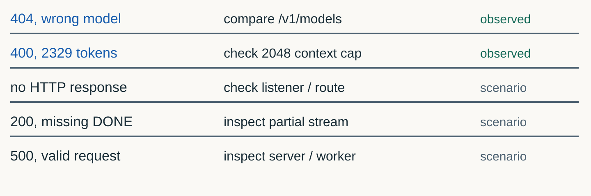
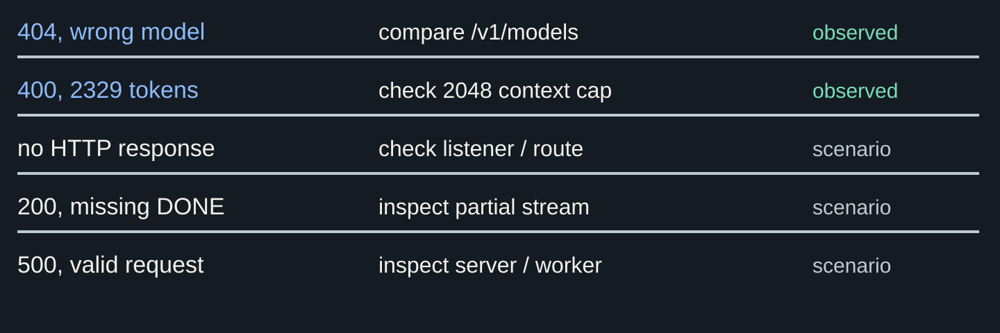
Timeouts identify clocks, not the guilty component
Illustrative timeout policy · no host timings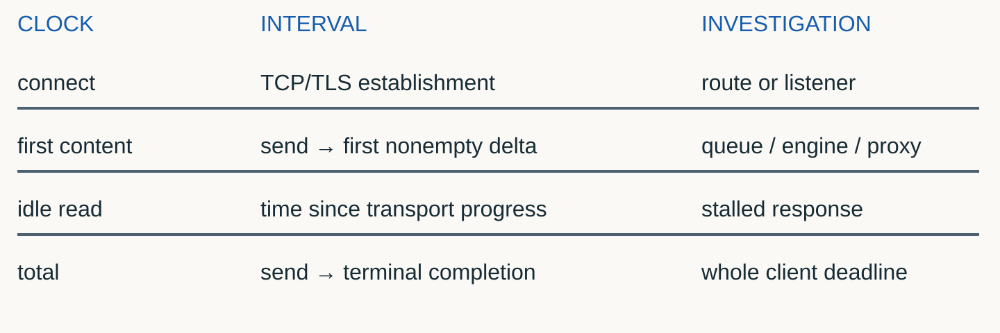
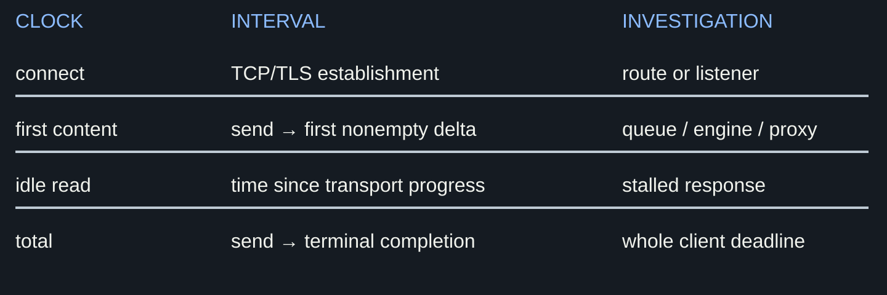
Correlate without logging private prompts
ObservabilityThese fields usually diagnose a boundary without storing raw user text. Keep any prompt logging disabled or tightly controlled, redacted and retention-limited.
HTTP 200 does not guarantee a useful answer
Response validation“The call succeeded; the model's output is valid.”
Which failure happens before the GPU?
Pause · classifyPut each at the earliest failing boundary. What status, log or memory observation would confirm your placement?
Streaming
A partial answer is not a completed request.
Nine text deltas form the recorded greeting
Fresh v3 capture · client-arrival clocks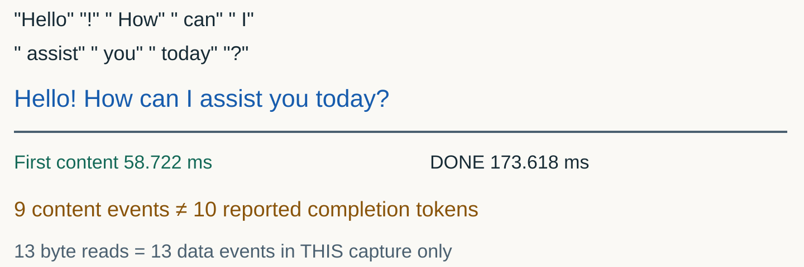
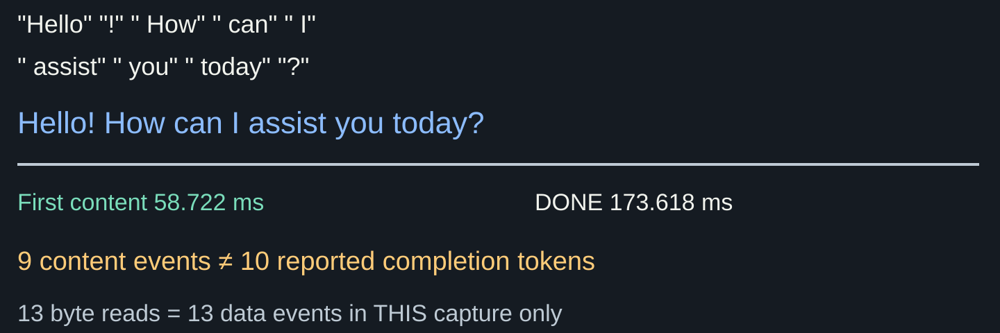
The synthetic stream has six data events
Synthetic CPU fixture · invented content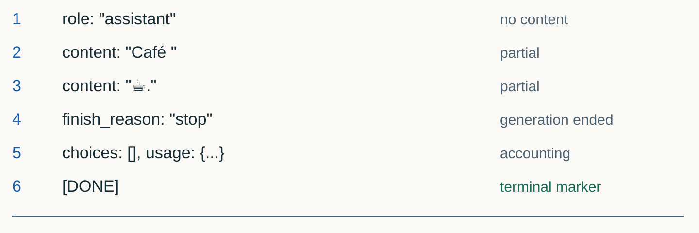
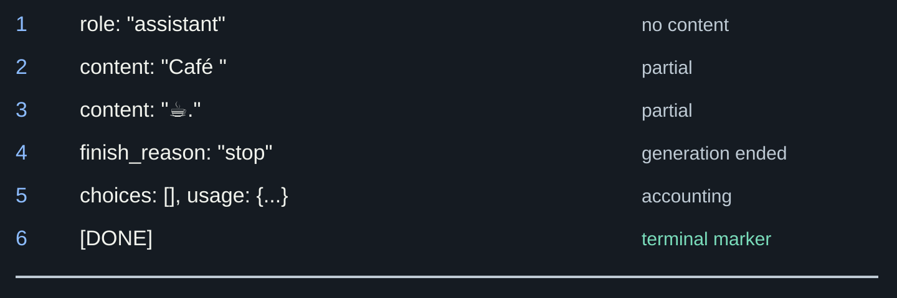
Network reads can split a character
Synthetic byte split · UTF-8 arithmetic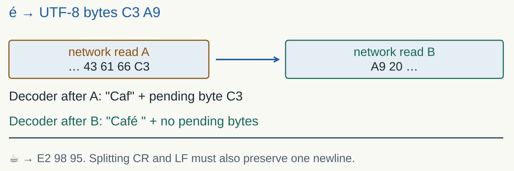
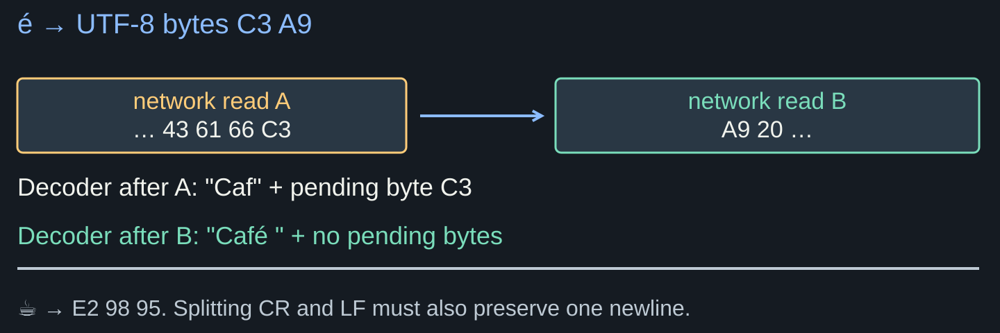
A streaming parser keeps state across reads
Synthetic CPU parser · processing order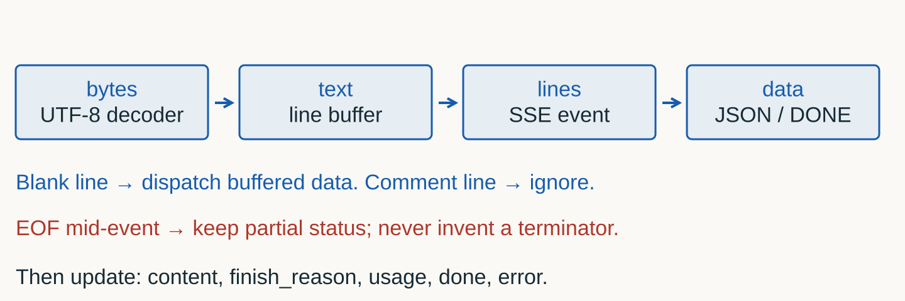
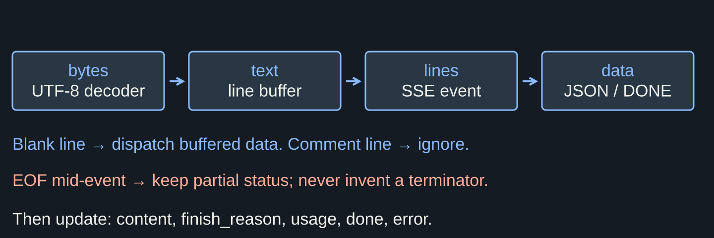
SSE line rules and incomplete input
WHATWG framing| Input | Parser action | Result |
|---|---|---|
: heartbeat | ignore comment | no data event |
two data: lines | join with newline | one event on blank line |
\r\n, \n or \r | recognize line ending | same framing |
| EOF before blank line | discard pending event | partial completion |
Finish, DONE and useful output are separate checks
Synthetic completion decisions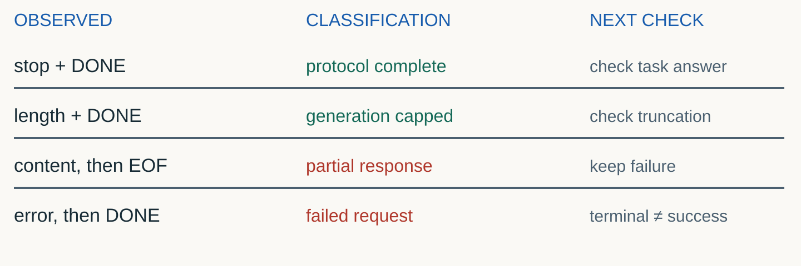
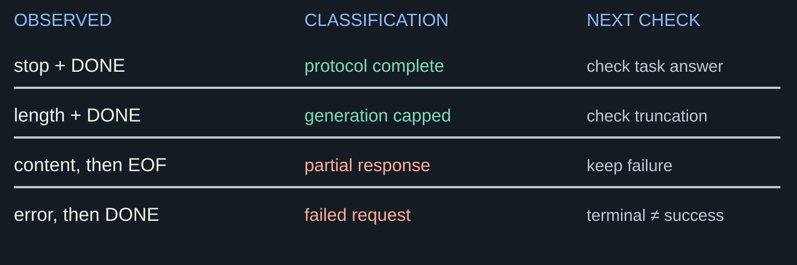
The fixture is reproducible without a server
Synthetic state after each data event| Event | Accumulated text | State |
|---|---|---|
| role | empty | open |
| content #1 | Café | partial |
| content #2 | Café ☕. | partial |
| finish + usage + DONE | Café ☕. | complete after DONE |
Reveal a complete stream and a failure point
Interactive SSE state · step with →Four client timestamps answer different questions
Synthetic arrivals · monotonic seconds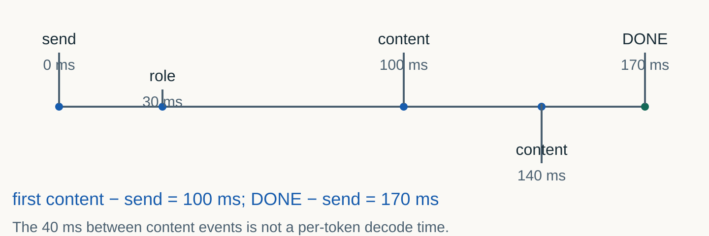
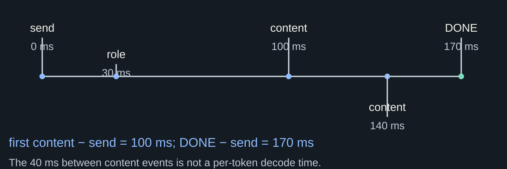
First-content time at the client
Synthetic fixture clocksToken gaps require token-arrival boundaries
Illustrative one-token-per-event assumptionFailure: the proxy buffers healthy SSE
Production scenario CDetect
Direct localhost stream shows early deltas; proxied client receives one late burst. Compare first-content timings and proxy buffering headers/settings.
Mitigate
Disable buffering on the streaming route, set appropriate idle/total timeouts, retest direct and proxied paths, and watch disconnect rate.
Client cancellation has a server-side consequence to verify
Illustrative lifecycle · cancellation unmeasured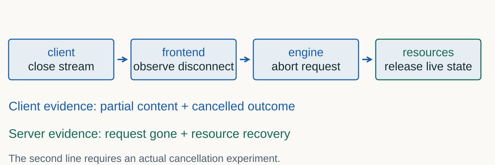
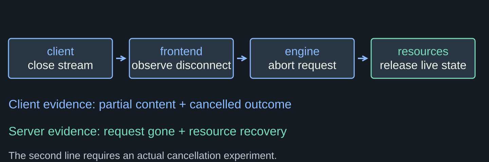
Cancellation and retry need distinct records
Illustrative application policy| Attempt | Observed content | Outcome |
|---|---|---|
| A, first request | Café | user cancels |
| A, server cleanup | not observed by parser | must verify separately |
| B, optional retry | new generation | new attempt ID |
| UI decision | replace or label partial A | never append B blindly |
Each attempt retains its completion state
Text-only client success predicate| Observation | Client state | Metric treatment |
|---|---|---|
| finish + DONE, no error | protocol complete | check task acceptance |
| content then disconnect | partial answer | incomplete attempt |
| timeout before content | failed attempt | first-content time unavailable |
| error event, then DONE | failed generation | terminal does not erase error |
Completion accounting across five attempts
Illustrative population| Outcome | Count | Complete answers |
|---|---|---|
| normal stop + DONE | 2 | 2 |
| length + DONE | 1 | depends on task policy |
| partial disconnect | 1 | 0 |
| error event + DONE | 1 | 0 |
First byte is not necessarily first content
Measurement boundary“Headers arrived quickly, so first-token latency is good.”
Would you display this answer as complete?
Pause · partial response[DONE]Classify the response and describe one client-visible fallback and one server-side metric you would inspect.
Capacity
Context, live tokens and memory determine admission.
Rendered input and requested output share a context budget
Measured rejection + illustrative alternatives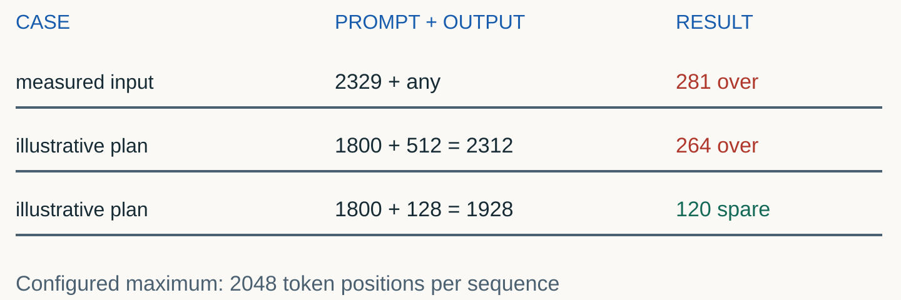
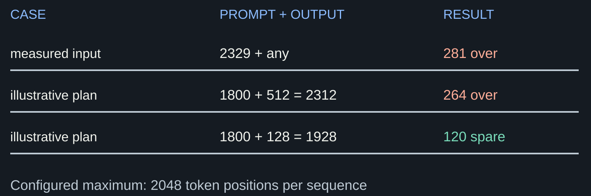
--max-model-len is a context policy
CLI flagChoose a value compatible with the model and available KV memory. It limits an individual request's rendered prompt plus generation; it does not reserve that length for every client.
--gpu-memory-utilization is a budget target
CLI flagThe lab sets 0.45 to bound this small experiment. The remaining memory is not automatically a throughput guarantee or a safe place for another uncontrolled GPU process. vLLM engine argument.
The lab model retains 12 KiB of logical KV per token
Pinned 0.5B config · payload arithmetic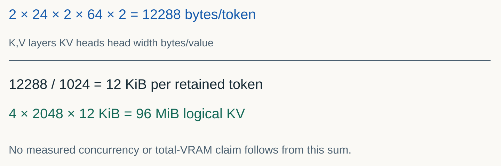
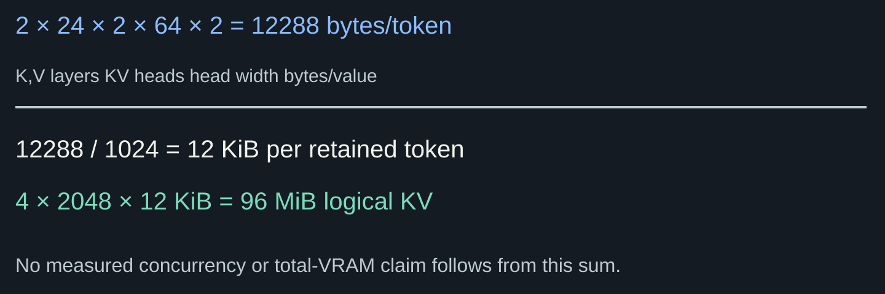
Transfer exercise: a different model and KV pool
Illustrative 3B-style payload boundChange clients and context; watch KV pressure
Interactive logical capacityLogical payload against an illustrative 6 GiB pool; not vLLM's allocator.
Active slots do not remove queueing
Scheduler boundaryActive
Admitted requests hold live state and consume iteration work. Their token lengths vary.
Queued
Additional requests wait before GPU service, increasing user-visible TTFT without changing one kernel's speed.
A model can start and later OOM
Workload dependenceA small idle process has room. Long prompts and more live sequences grow KV and workspace demand. Detect with request token counts, memory telemetry and admission logs; reduce limits or select a smaller candidate.
A sequence cap is not a performance guarantee
Common shortcut“--max-num-seqs 4 guarantees four requests at any context.”
Which limit would you change first?
Pause · evidence requiredUse model size, rendered input tokens, requested output cap and free GPU memory to decide whether to lower context, concurrency or model size. What observation would reject your choice?
Operate safely
The model, server and cache have separate lifecycles.
Choose the network boundary deliberately
Local lab versus production| Setting | Lab choice | Production question |
|---|---|---|
| bind host | 127.0.0.1 | who can reach the API? |
| port | 8000 | collision and ingress policy? |
| API key | local placeholder | authn/authz and rotation? |
| proxy | none | SSE buffering and timeouts? |
Request logs can contain sensitive prompts
Data hygieneRequest ID, model revision, token counts, status and phase times usually support triage. If raw prompts are ever logged, control access, retention and redaction explicitly.
Failure: every clean launch downloads weights again
Production scenario DDetect
Startup duration scales with network transfer; logs show repeated fetch/resolve. A failed download looks like a model failure even though GPU is idle.
Mitigate
Prefetch one immutable revision, keep the model cache across runs, start from the local snapshot and fail offline if expected files are missing.
Use a bounded readiness window
Operational phaseThe lab allows five minutes for its small local service. The judge has a separate 45-minute startup policy for immutable student submissions. Neither timeout is a performance score by itself.
Capture versions with the result
Provenance| Layer | Record |
|---|---|
| artifact | model + tokenizer immutable revision |
| runtime | vLLM, Python, PyTorch, CUDA, driver |
| device | GPU name, memory, compute capability |
| launch | flags, cache path, served name |
Teardown has observable acceptance checks
One server process tree| Check | Pass evidence | Failure action |
|---|---|---|
| owned server | process tree has exited | bounded terminate, then escalate |
| loopback port | no listener on owned port | identify owner before restarting |
| GPU state | baseline restored | stop the next GPU task |
| immutable snapshot | still cached and verified | reuse offline next week |
One smoke request is not a load result
Scope warning“Chat works, therefore this instance supports 64 clients.”
What survives a clean restart?
Pause · state inventoryWhich state should be deleted, which reused, and which sanitized before sharing? Explain why a clean service process need not imply a clean model download.
Prove it
A launch command plus client evidence becomes a service contract.
Lab: small pinned model, one bounded process
Startup + API smokePrefetch the immutable snapshot once, launch with a 2048-token context cap, four active sequences and 45% GPU-memory target. Wait for /v1/models with a five-minute deadline.
CPU parsing and GPU smoke prove different things
Lab entry points| Path | Runs without GPU? | Evidence |
|---|---|---|
| synthetic byte replay | yes, standard library | UTF8/SSE/client states |
| recorded transcript replay | yes | reinspection of one old run |
| fresh vLLM server smoke | no, CUDA required | this deployment works now |
| concurrency benchmark | separate later topic | load distribution and failures |
Three API observations belong to separate requests
Recorded September smoke · single client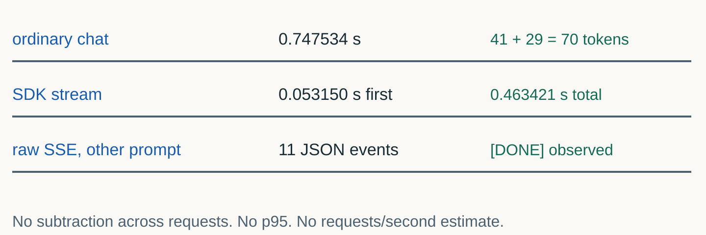
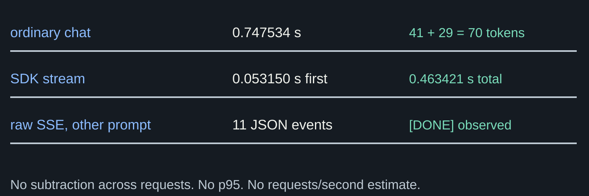
Trace a client-visible service, not an open port
Pinned Topic 04 · step with →/v1/models advertises topic04; wrong name returns 404finish_reason=stop in one 0.748 s request[DONE]Single-client API smoke · sanitized evidence; no load or p95 claim.
Keep the implementation contract versioned
Primary readingWhat proves your server is ready for this client?
Exit ticketName the exact model string, the terminal signal that makes a stream complete, and one negative request that should fail without GPU work.

The service contract includes identity, limits, completion, errors and a recoverable lifecycle—not just generated text.
Now inspect the scheduler.
Topic 05 derives PagedAttention and continuous batching: how live requests share KV memory and GPU iterations after the API admits them.